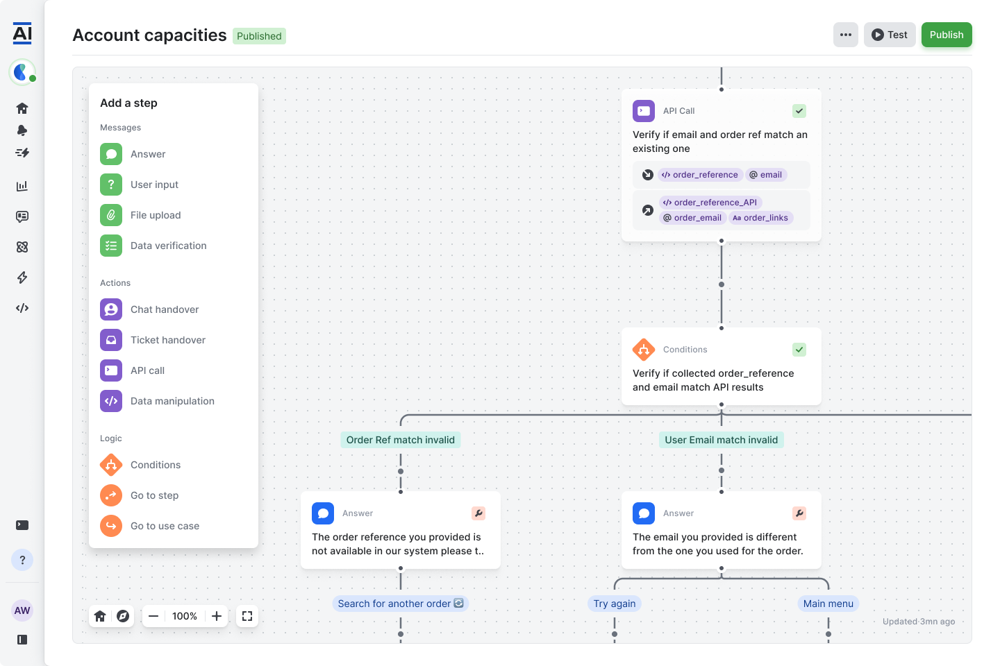

Mindsay · 2018–2023
Workflow builder
Workflow builder interface design for Mindsay.
- Company
- Mindsay
- Year
- 2018–2023
- Type
- Web app
- My role
- Design leadership
Overview
A workflow-building interface from my time at Mindsay, where I built and scaled the design function. A canvas and a library of actions bring the automation flow into one workspace.
Scope
- Workflow editing
- Action library
- Product interface
Let’s talk design.
Interested in this work? Get in touch.